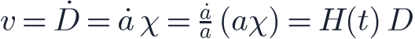
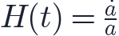
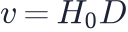
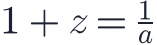

In this lesson you will learn
|
A stretching grid
Imagine drawing a grid on the universe, with galaxies sitting at the grid points. As the universe expands, the grid stretches but galaxies keep their grid positions (ignoring their small peculiar velocities). Their coordinates stay the same; only the spacing of the grid grows.
The cosmological principle says this stretching must be the same everywhere and in every direction. So one number describes it at each moment: the scale factor .
Comoving and proper distance
- The comoving distance is the distance measured on the grid. It does not change as the universe expands.
- The proper distance is the actual physical distance you would measure with a (very long) ruler at a given moment.
They are related by the scale factor:
By convention today (), so comoving distances equal today's proper distances. When the universe was half its current size, , and all proper distances between galaxies were half of today's.
Worked example Two galaxies are 100 Mpc apart today. When was 0.25, they were Mpc apart. When reaches 2 in the future, they will be 200 Mpc apart. Their comoving separation remains 100 Mpc throughout. |
From the scale factor to Hubble's law
How fast does the proper distance grow? Differentiate with respect to time (the dot means ):

with the Hubble parameter

This is the Hubble–Lemaître law, derived from uniform stretching. The Hubble constant is simply today's value, . The Hubble "constant" is the same everywhere in space at a given time, but it changes with time.
One function describes the universe Everything about the expansion is contained in . The rest of this level answers the question: what determines how changes? |
Faster than light?
Because

grows without limit, galaxies beyond the Hubble distancerecede faster than light. Does this break relativity?
No speed limit is broken Special relativity forbids objects from moving through space faster than light relative to each other at the same place. Recession velocity is not motion through space; it is the growth of space between distant objects. We routinely observe galaxies whose light was emitted when they were receding faster than light. |
The scale factor and redshift (a preview)
As light travels through expanding space, its wavelength is stretched along with everything else. Light emitted when the scale factor was arrives today with

A galaxy at emitted its light when the universe was half its present size. This is the subject of the next lesson.
Try it: Balloon & Raisin-Bread Expansion Watch galaxies keep their grid positions while the distances between them grow. |
Remember this
|